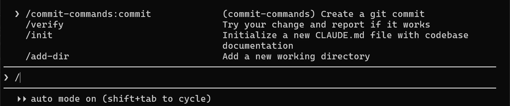
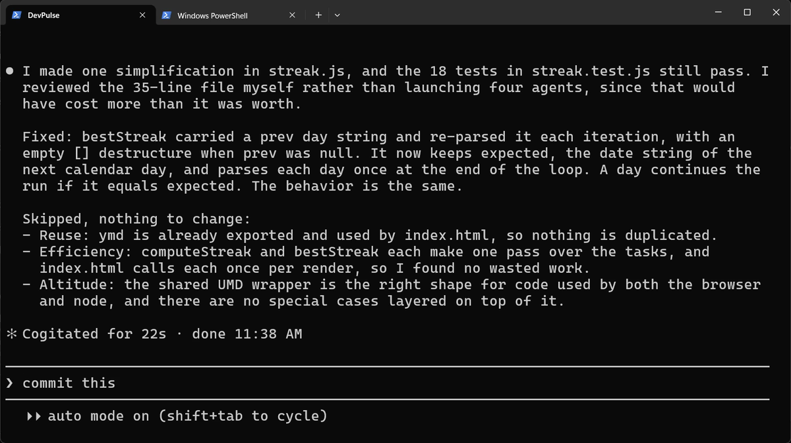
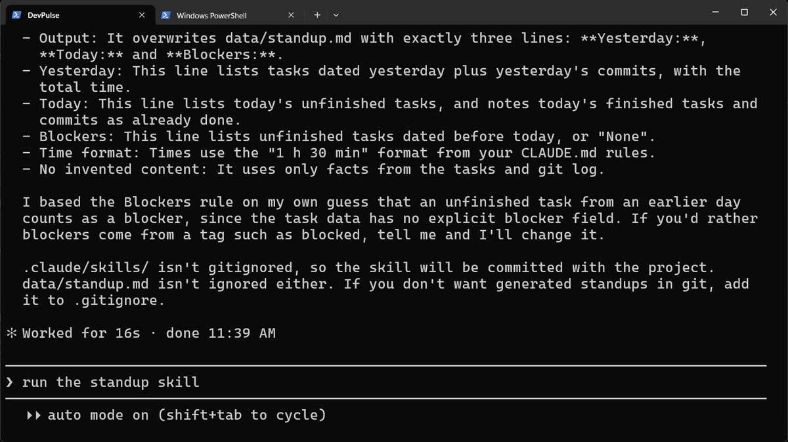
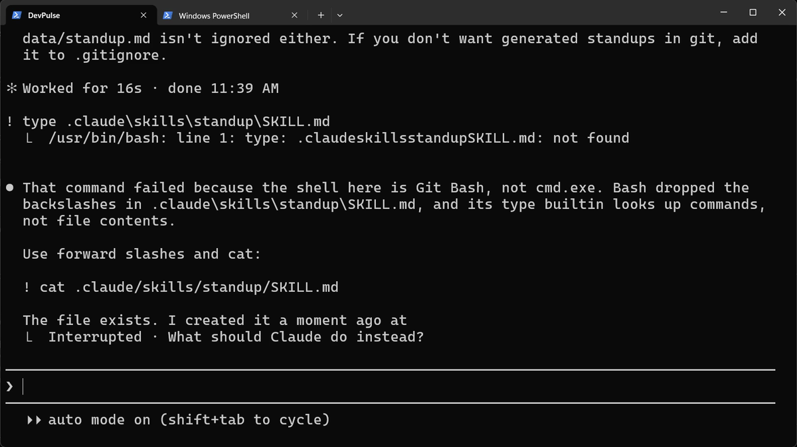
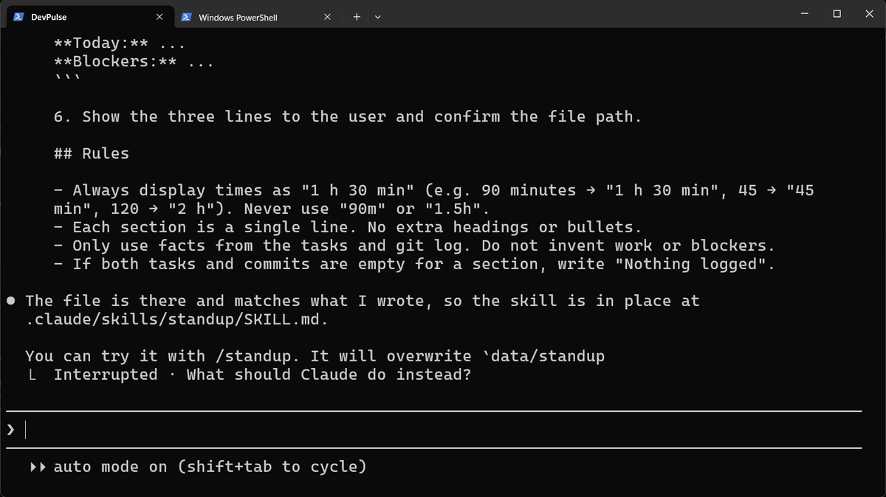
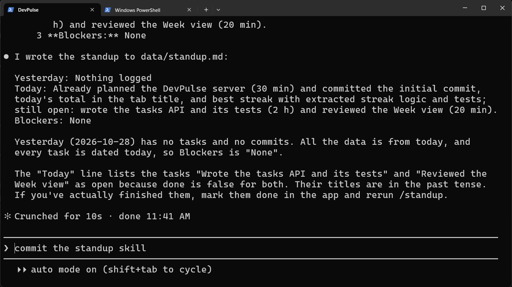
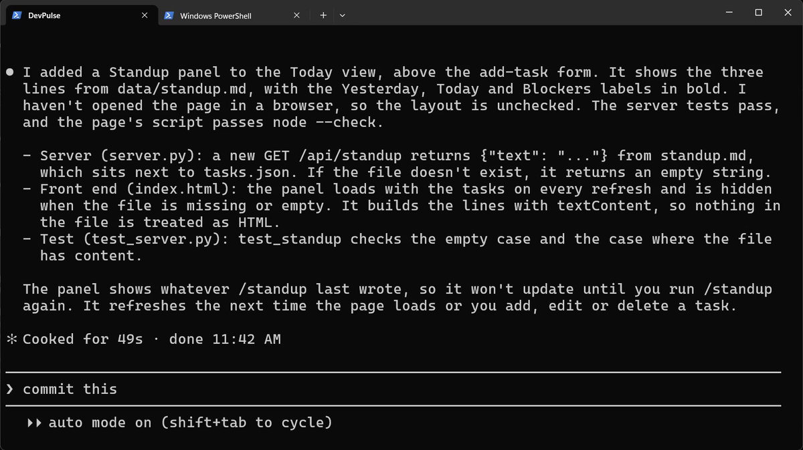
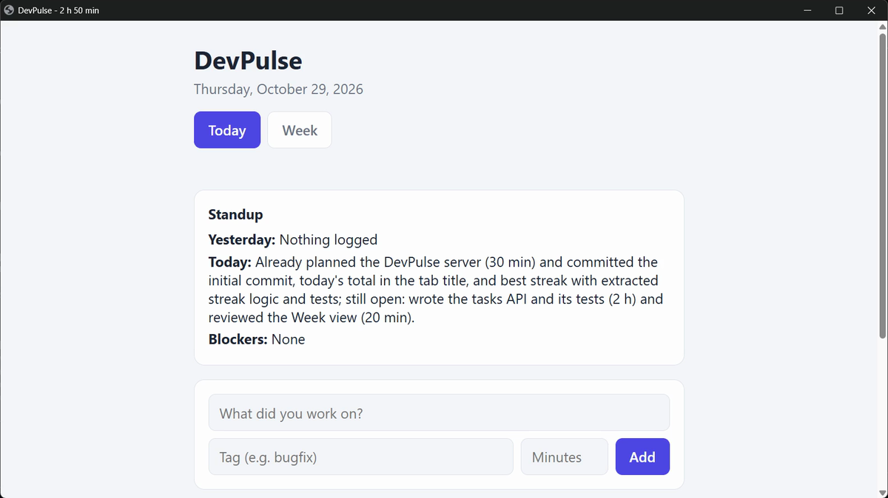

The same instruction, every morning
Say your team has a standup every morning. Before it, you type the same thing into Claude: read today's tasks, read yesterday's commits, write three lines.
It works. But it is the same long sentence every day, and some days you forget a part of it.
How do you write an instruction down once, and run it with one short command?
Skills already built in
Type / in Claude Code. A list opens. Some lines are commands you know, like /init. Others are skills: written instructions Claude follows for one kind of job.

/ and keep typing to filter. Built-in skills, plugin commands and your own skills all appear here.Try one on a file you wrote in chapter 5.

bestStreak, kept all 18 tests passing, and listed what it chose not to change.Write your own skill
A skill is a folder with one file in it, SKILL.md. A project skill lives in your project, in .claude/skills/. You can ask Claude to write it.

Now read what it wrote. One small surprise on Windows first.

! runs commands in Git Bash on Windows, not in PowerShell. Backslashes and type fail; forward slashes and cat work.
| Part of SKILL.md | What it is for |
|---|---|
name: standup | The command: /standup |
description: | When to use it. Claude reads this to decide whether the skill fits a request. |
| The steps and rules | What Claude does each time the skill runs |
Claude may also start a skill on its own when your request matches its description. For a skill that changes things, add disable-model-invocation: true under the name. Then only you can start it.
Run it, then show it in the app
The skill appears in the / menu straight away.


/standup last wrote.Restart the server in your second tab (Ctrl+C, then python server.py; Mac: python3) and refresh the page.

/commit-commands:commit.What a skill costs
A skill's name and description are loaded into every session, so a long list of skills costs a little each time. Keep each description short and exact.
And a skill still needs you to open Claude and type /standup. What if the standup were ready before you even started Claude? That is chapter 8.
Quick reference
The prompts from this chapter, ready to copy: every prompt, chapter 7.
| Command or key | What it does | Use it when |
|---|---|---|
/ | Lists every command and skill you can use here | You want to see what is built in |
/simplify file | Tidies code without changing what it does | Code works but reads awkwardly |
Create a project skill called … | Writes .claude/skills/<name>/SKILL.md for you | You type the same instruction again and again |
/<skill name> | Runs your skill | You need that job done |
! cat .claude/skills/<name>/SKILL.md | Shows the skill's file | You want to read or check what Claude wrote |
disable-model-invocation: true | A line in SKILL.md: only you can start the skill | The skill changes things, so Claude should not run it on its own |
Turn your own repeat into a skill
The goal: one instruction you type often becomes one command.
The steps: pick an instruction you typed more than twice this week. Ask Claude: Create a project skill called … in .claude/skills/…/SKILL.md that …. Read the file with ! cat, then run it.
Guess first: will Claude follow your rules from CLAUDE.md inside the skill too?
One question for you: which of your daily instructions should only you be allowed to start?
References
Where each command and file on this page comes from. Every screenshot is from our own recording on 29 Oct 2026, Claude Code 2.1.312.
- Anthropic · Agent skills in Claude Code What a skill is, where project and personal skills live, SKILL.md's name and description, and disable-model-invocation. https://code.claude.com/docs/en/skills
- Anthropic · Slash commands The / menu: built-in commands, skills and plugin commands in one list. https://code.claude.com/docs/en/slash-commands
- My own recording · 29 Oct 2026, Windows 11 The skill was written in 16 seconds; /standup ran as a command straight away.